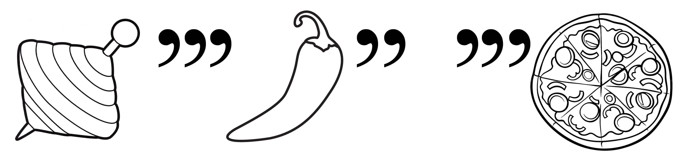
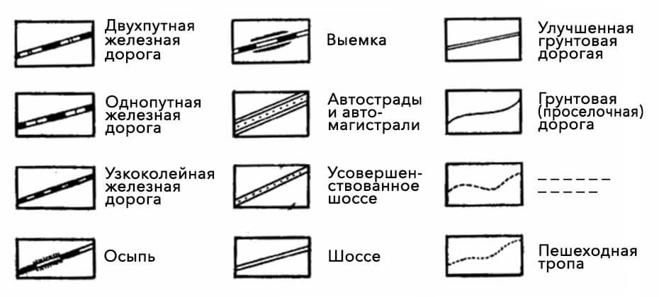
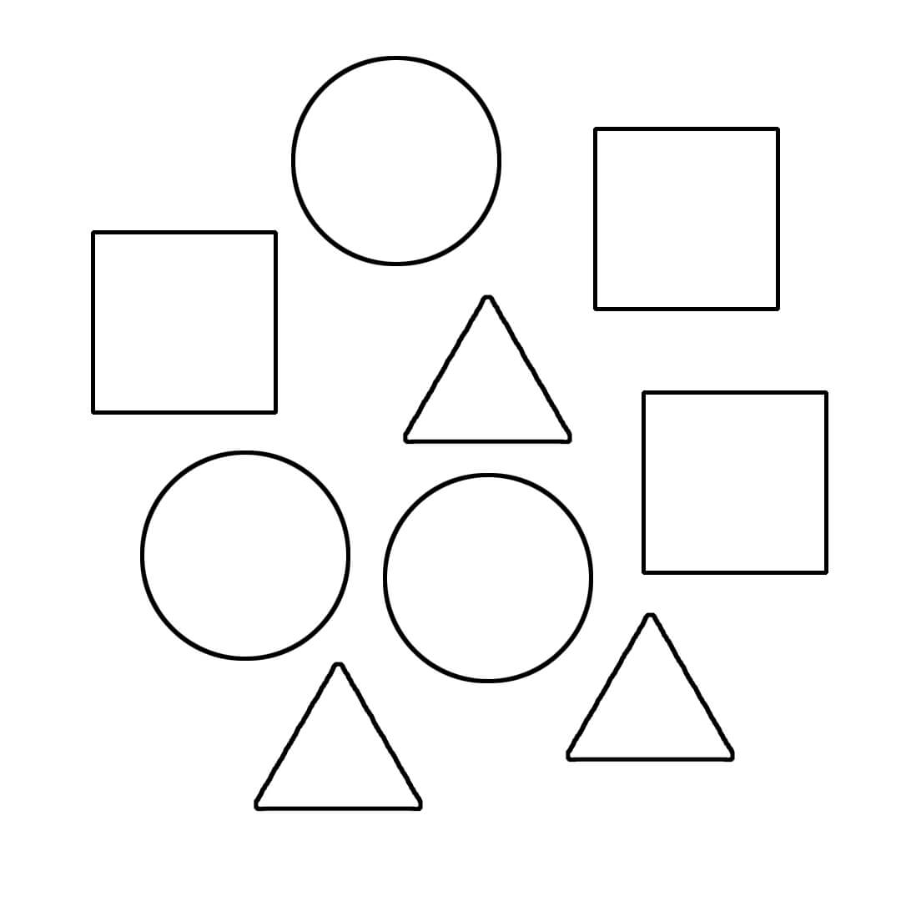

Несколько рекомендаций по прохождению квеста!
- Не бросайтесь проходить квест сразу — для начала хотя бы минимально ознакомьтесь с экспозицией.
- Отвечать на задания можно в любом удобном для вас порядке.
- Если совсем не удаётся решить какое-то задание, то смело переходите к следующему. Пока будете решать следующее задание, можете натолкнуться на ответ к предыдущему 😉
- Чтобы пройти квест, обращайте внимание на работы всех авторов.
- Если вы правильно ответите на все вопросы квеста, то получите приятный бонус от LIBRA.
1.
Для разминки, как нам кажется, несложное задание.
ОН — это и серия космических кораблей США, и «хорошо сложенный красивый мужчина», и кипрский футбольный клуб из города Лимасол. ОН фигурирует в название многих работ в экспозиции. Ваша задача проста, НАПИШИТЕ, пожалуйста, В КАКОМ ГОДУ была создана самая поздняя работа из экспозиции, в названии которой ОН фигурирует?
К сожалению, это неправильный ответ. Попробуйте еще раз! Помните, что можно воспользоваться видеоподсказками или нажать на кнопку «Узнать ответ».
Серия космических кораблей США, «хорошо сложенный красивый мужчина», кипрский футбольный клуб из города Лимасол — Аполлон. В экспозиции есть несколько работ, в названии которых фигурирует «Аполлон». Самую позднюю из них создал Владимир Бескровный в 2021 году.
Правильный ответ: 2021.
Подсказка №1
Подсказка №2
2.
Старые-добрые ребусы снова в нашем квесте. Как у вас обстоят дела с ребусами? Сколько запятых или апострофов — столько букв надо убрать в начале или в конце слова, которое изображено. В ребусе мы загадали вам название одной работы на выставке.
Разгадали ребус? У вас должно было получиться легендарное для римлян животное. Найдите работу с таким названием и напишите, пожалуйста, КТО, ну или ЧТО РАСПОЛОЖИЛОСЬ НАПРОТИВ.
К сожалению, это неправильный ответ. Попробуйте еще раз! Помните, что можно воспользоваться видеоподсказками или нажать на кнопку «Узнать ответ».
Если разгадаем ребус, то получим ВОЛ(ЧОК) + ЧИ(ЛИ) + (ПИЦ)ЦА = ВОЛЧИЦА, легендарное для римлян животное. В экспозиции есть работа Михаила Дайлидова с названием «Волчица», а напротив неё расположилась работа с названием «Канатоходцы».
Правильный ответ: канатоходцы.
Подсказка
3.
Давайте проверим, насколько хорошо вы изучили биографию Эжена Делакруа. Соотнесите, пожалуйста, даты и события из его жизни.
| 1 | 1798 | А | 13 августа Делакруа скончался от рецидива болезни горла в возрасте 65 лет. |
| 2 | 1815 | Б | Награждён орденом Почетного легиона. |
| 3 | 1831 | В | Делакруа в составе официальной дипломатической миссии направляется в Марокко. Поездка сильно повлияла на дальнейшее творчество художника. |
| 4 | 1832 | Г | Выставляет в Салоне свою известнейшую картину «Свобода, ведущая народ» |
| 5 | 1855 | Д | Умирают родители Делакруа, он поступает в мастерскую Пьера Нарсиса Герена. |
| 6 | 1863 | Е | 26 апреля родился Эжен Делакруа в пригороде Парижа. |
К сожалению, это неправильный ответ. Попробуйте еще раз! Помните, что можно воспользоваться видеоподсказками или нажать на кнопку «Узнать ответ».
Помочь чем-то сложно, ведь для правильного ответа вам надо внимательно изучить информационный стенд.
Правильный ответ: 1Е2Д3Г4В5Б6А.
Подсказка
4.
Как у вас было с географией в школе? Если не очень, то пришло время исправиться!
На изображении мы зашифровали название одной из работ. Постарайтесь догадаться, чего не хватает. Когда найдете нужную работу, напишите, пожалуйста, КАКОЙ ЗНАК ЗОДИАКА фигурирует на работе, которая расположилась справа?
К сожалению, это неправильный ответ. Попробуйте еще раз! Помните, что можно воспользоваться видеоподсказками или нажать на кнопку «Узнать ответ».
Перед вами обозначения различных путей сообщения, которые можно найти на географических картах. Какого-то одного не хватает. Какого конкретно — сказать сложно, поэтому надо было искать в экспозиции что-то связанное с «дорогой, шоссе, магистралью, тропой». Когда увидите работу «Лесная тропа» Эжена Делакруа, то, вероятно, поймете, что вы у цели. Теперь смотрим на работу слева — «Лев, пожирающий лошадь». Вот и нужный нам знак зодиака — Лев.
Правильный ответ: Лев.
Подсказка
5.
Хорошо изучили выставку? Тогда вот вам еще одно задание!
ОНИ родились с разницей примерно в 545 лет и при этом вместе фигурируют в название одной из работ в экспозиции. Если нашли ИХ, то НАПИШИТЕ, пожалуйста, ИМЯ КРАСАВЦА, который фигурирует на работе, которая расположилась слева?
К сожалению, это неправильный ответ. Попробуйте еще раз! Помните, что можно воспользоваться видеоподсказками или нажать на кнопку «Узнать ответ».
Вряд ли вы знаете двух конкретных персонажей, которые родились с разницей в 545 лет, поэтому советуем обращать внимание на названия работ, где есть два каких-то персонажа. Когда вам на глаза попадётся литография «Портрет Шопена в образе Данте», то вы, вероятно, сопоставите, что Шопен и Данте, действительно, представители абсолютно разных эпох. А работа слева — «Портрет Эжена Делакруа», таким образом, имя нужного вам красавца — Эжен.
Правильный ответ: Эжен.
Подсказка
6.
Согласно одной известной пословице, ОН «хуже татарина». Задача достаточна проста: найдите ЕГО в экспозиции и напишите, пожалуйста, сколько «аксессуаров» «украшает» работу, где он фигурирует?
К сожалению, это неправильный ответ. Попробуйте еще раз! Помните, что можно воспользоваться видеоподсказками или нажать на кнопку «Узнать ответ».
Вы, вероятно, знаете нужную пословицу «Незванный гость хуже татарина». Значит «он» — «Незванный гость». Когда найдете скульптуру Дарьи Гласс с названием, то посчитайте количество «аксессуаров», то есть гвоздей, которые «украшают» работу. У вас должно получится 17 гвоздей.
Правильный ответ: 17.
Подсказка
7.
Вы видите еще одно зашифрованное название работы из экспозиции. Подумайте, что вы видите на изображении и ищите работу с таким названием.
Нашли? Тогда напишите, пожалуйста, КАКОЙ ИТАЛЬЯНСКИЙ ГОРОД расположился справа?
К сожалению, это неправильный ответ. Попробуйте еще раз! Помните, что можно воспользоваться видеоподсказками или нажать на кнопку «Узнать ответ».
На изображении вы видите много геометрических фигур, другими словами, «группу фигур». Так что осталось найти литографию Делакруа с названием «Группа фигур», а справа от неё — «Битва при Арколе». Получается, нужный вам итальянский город — Арколе.
Правильный ответ: Арколе.
Подсказка